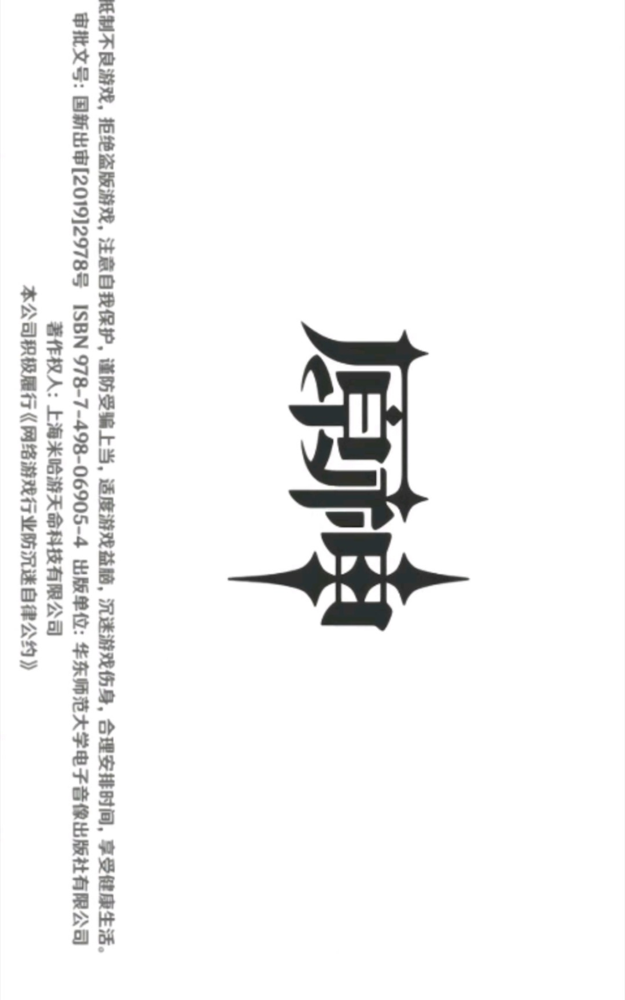
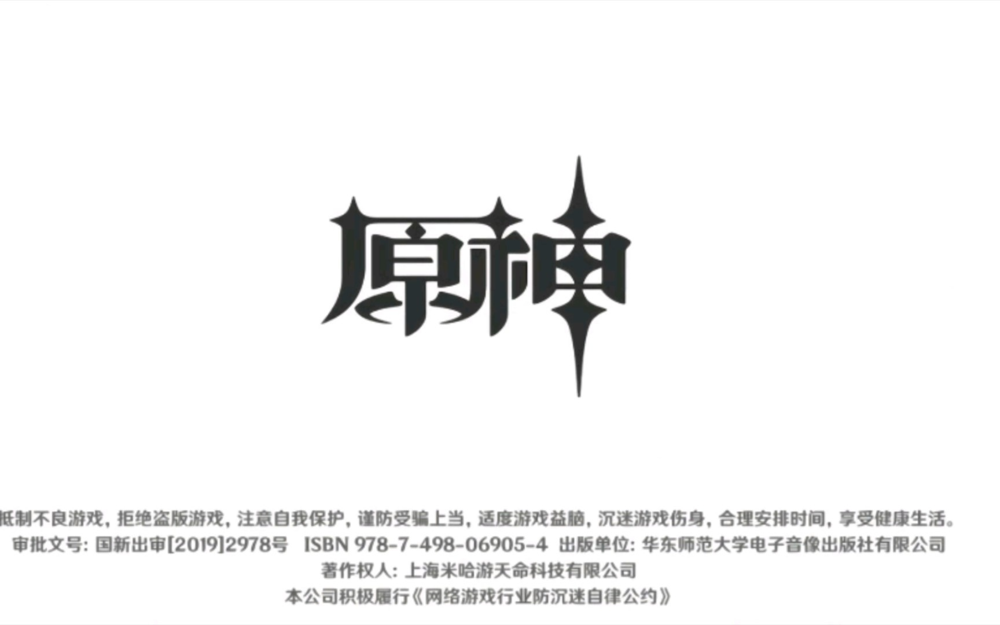

点击开始
倒计时：30
我们想要记录的事情，是天上的意志如何在大地上拥有了形态。啊，天上之神，这些创造都是你们的作为。那就请你们启发我的神智，让我源源不断地记录。
【鸽子衔枝之年】
天上永恒的王座到来，世界为之焕然一新。然后真王，原初的那一位开始和旧世界的主人们，七位恐怖大王开战。那恐怖的大王们是龙。
原初的那一位造出了自己发着光的影子。而影子的数量是四。
【法涅斯，或者原初的那一位】
原初的那一位，或许是法涅斯。它生着羽翼，头戴王冠，从蛋中出生，难以分辨雌雄。但是世界如果要被创造，蛋壳必须被打破。法涅斯——原初的那一位——却用蛋壳隔绝了「宇宙」和「世界的缩影」。
【衔枝后四十余年】
四十个冬天埋葬了火，四十个夏天沸腾了海。七位大王全部被打败，七个王国全部对天上俯首称臣。原初的那一位大王开始了天地的创造。为了「我们」——它最可怜的人儿将出现在这片大地。
【衔枝的四百余年】
山川与河流落成，大海和大洋接纳了反叛者和不从者。原初的那一位和一位影子制造出了飞鸟、走兽和水鱼。它们也制造出了花草树木。最后，人出现了。
原初的那一位对人有一套神圣的规划。人只要幸福，它便欢欣。
人类耕耘、掘矿、写就诗歌。若是食物匮乏，天上便落下甘霖与食粮。若是矿藏不足，大地便生出矿物。若是忧郁蔓延，高天就以声音回应。
可是，后来，人却开始不服从神圣的规划。
【葬火之年】
天上的第二个王座到来，仿佛创世之初的大战再一次开演。
两派天上的生灵爆发战争。
大地被烧得满目疮痍。
我们的先祖，躲避战火，逃进大地的深处。
在地下，我们失去了太阳。
活着就是无尽的苦海。我们只是在寻找归途。
【黑暗的第三年】
唯一没有抛弃我们的那一位，她乃是「时间之执政」。她是时刻，是无时不刻，是千风与日月之度量。她是一切欢欣之时，一切愤怒之时，一切渴望之时，一切迷狂之时。她是一切谵妄的时刻。
我们称呼她「卡伊洛斯」，或者「不变世界的统领与执政」。真正秘密的名字，我们不敢直言，所以在这里倒写。「露塔斯伊」——我仅提一次。
【目盲之年】
贤人阿布拉克他被开启了神智，他展示了从手中发出光的奇迹。先祖们以他为首领，开始建设「赫利俄斯」。
【目明之年，或日月的元年】
「赫利俄斯」——太阳的神车，终于落成。白夜到来。常夜消散。
日月的纪年开始了。
【日月的二年】
先祖们尝试寻找归途。地表的大战应该已经结束。
但是原初的那一位，第一个王座，布下了禁令。先祖们无法找到归家之路。
既然是如此，那原初的那一位，应该打败了后来的第二位吧。
阿布拉克被太阳之子下令囚禁。
【树的比喻】
王的园丁与御园的树精相爱。
但是国王想要新修凉亭的雕梁，需要砍伐最有灵气的那一棵灵木。国王是原初的那位之化身，因此园丁无法违逆万王之王，唯有对着国王的祭司祈祷。祭司乃是常世大神的化身。
祭司怜悯园丁，于是说，你去折下灵树的枝条吧。
园丁便去折枝，然后听从国王的命令砍伐了灵木。
之后园丁在原处种下新的树苗。年复一年，树苗长成大树，灵木的魂魄就此转生。于是园丁与树精再度相逢。
【忘忧莲的比喻】
有一种莲花，看见就会忘记忧愁。
在漫长的旅行中，寻找归途的船长遇到了一群以这种莲花为食的人们。
有的人留下了，有的人抗拒了这种诱惑。
留下的人，忘记了旅途的劳苦，忘记了归途的方向，在岛上幸福地生活。
抗拒诱惑的人，继续踏上旅程，历经千辛万苦，终于回到了故乡。
活着就是无尽的苦海。我们只是在寻找归途。
【日月之十年】
阿布拉克故去已久。日月之前的事情已经记录得足够。若无把一切按事实记写的胆量，哪里能成为常世大神的书记呢？
我听到了门外盔甲的声音，我于此绝笔。

